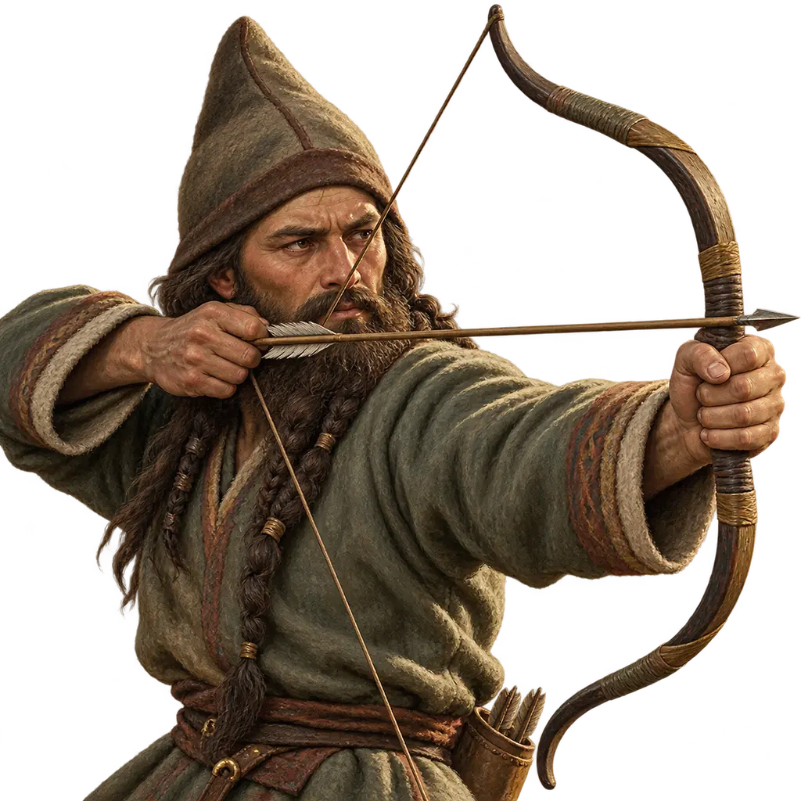
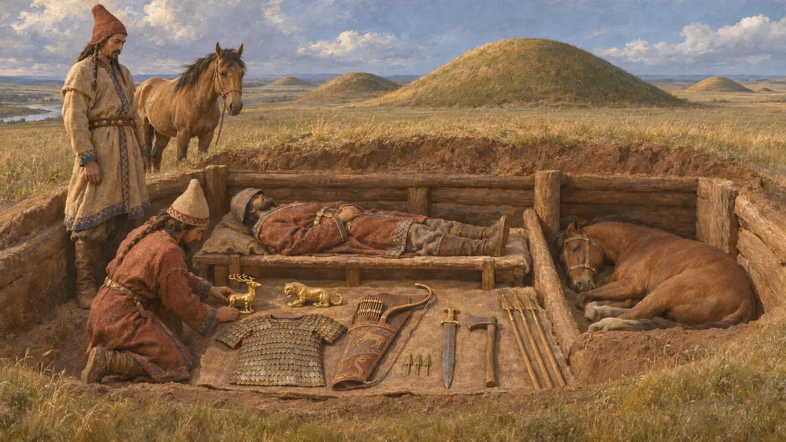
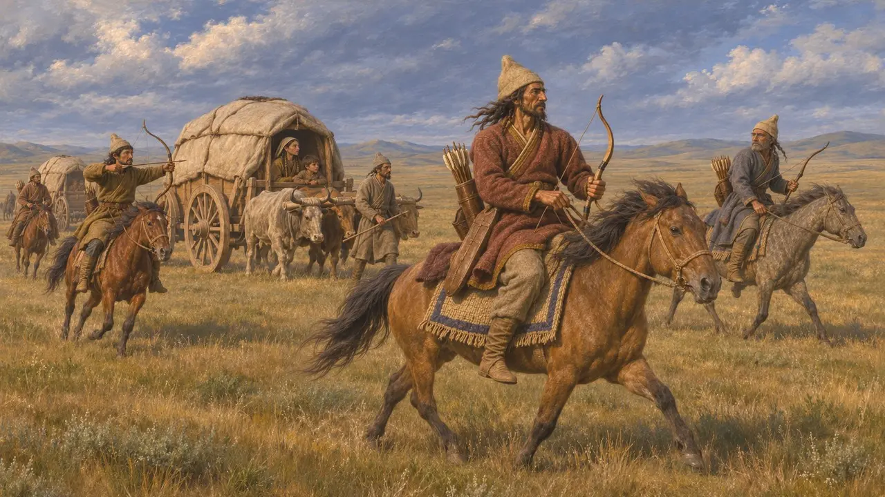
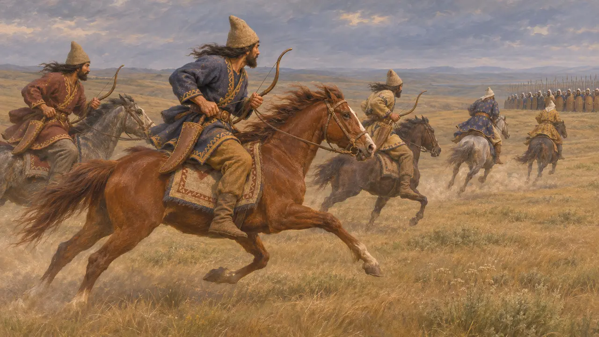
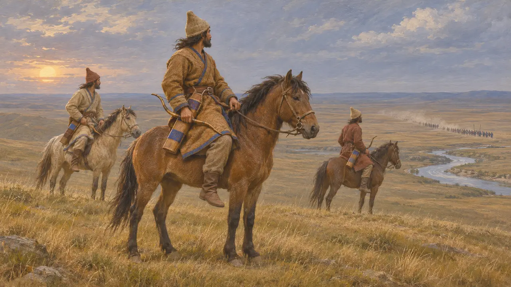
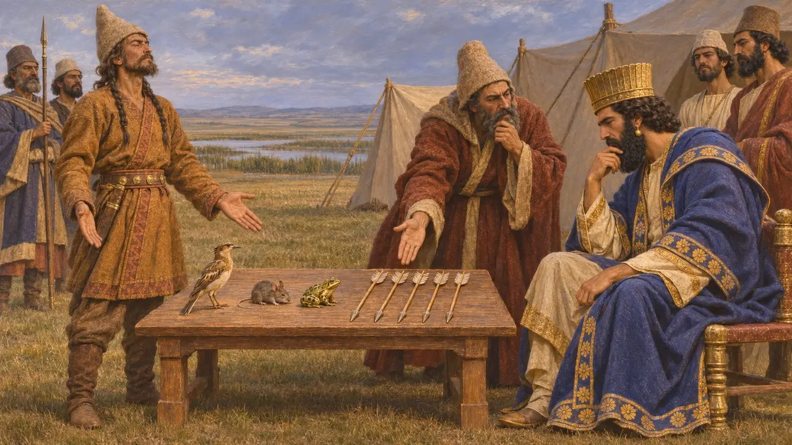

Encyclopédie › Soldats et navires

Guerriers scythes
Cavaliers nomades de la steppe pontique qui affrontèrent l'armée de Darius, vers 513 av. J.-C.
Dans le jeu : Niveau 6 : Le Pont de bateaux
Les Scythes étaient des nomades de langue iranienne vivant dans la steppe au nord de la mer Noire, célèbres comme archers à cheval. Lorsque Darius franchit l'Istros pour entrer sur leurs terres vers 513 av. J.-C., ils se dérobèrent au lieu de livrer bataille, épuisèrent son armée et le contraignirent à regagner son pont. Leur succès devint pour les Grecs une leçon durable sur les limites du pouvoir royal.
Dans le jeu : Dans « L'Istros », les Scythes apparaissent sous la forme d'archers, d'archers à cheval, de lanciers, d'un chef et d'un champion. Dans le jeu, les cavaliers perses taillent en pièces les cavaliers scythes ; Hérodote (4.128) dit au contraire que la cavalerie scythe mit en déroute la cavalerie perse.

Les tombes des cavaliers de la steppe
Dans les sourcesLes tertres funéraires (kourganes) du nord de la mer Noire et du Kouban, comme ceux de Kelermès et le kourgane de Melgounov, du VIIe siècle, renferment l'équipement de guerriers montés. On y trouve des arcs composites portés dans un étui combinant arc et carquois, des pointes de flèches en bronze à trois ailettes, des épées courtes, des haches de guerre, des lances et des armures à écailles. Les chevaux étaient souvent enterrés avec leurs maîtres, ainsi que des ouvrages d'or de style animalier.
R. Rolle, The World of the Scythians, 1989

Un peuple sans villes
Récit antiqueHérodote rapporte que les Scythes n'avaient ni villes ni murailles, vivaient dans des chariots et combattaient en archers à cheval, si bien qu'aucun envahisseur ne pouvait les atteindre. Il décrit aussi des guerriers prenant les têtes et les scalps de leurs ennemis comme trophées et faisant des coupes à boire avec les crânes. Sa longue description de la Scythie mêle récits de voyageurs et préjugés grecs, et doit être lue avec prudence.
Herodotus 4.46; 4.64-65

Contre Darius, au-delà de l'Istros
Récit antiqueHérodote rapporte que les Scythes, menés par trois rois dont Idanthyrse était le principal, refusèrent la bataille rangée, se replièrent devant les Perses et comblèrent puits et sources. Leurs cavaliers ne cessaient de mettre en déroute la cavalerie perse, qui refluait vers l'infanterie. Les braiments des ânes et des mulets perses effrayaient les chevaux scythes. Darius finit par s'esquiver de nuit, abandonnant ses malades, et atteignit le pont que les Ioniens avaient gardé.
Herodotus 4.120-129; 4.134-141

Jusqu'où et pourquoi Darius s'avança
ContestéHérodote attribue à Darius 700 000 hommes et une marche jusqu'au fleuve Oaros, deux affirmations largement tenues pour exagérées. Ctésias, connu par un résumé plus tardif, donne une armée encore plus nombreuse et une brève campagne achevée par une retraite précipitée. Les historiens se demandent toujours si la campagne fut une conquête manquée ou une démonstration de force limitée. Les listes de peuples de Darius lui-même incluent les Saka d'au-delà de la mer, ce qui pourrait signifier qu'il revendiquait un résultat en Europe.
Herodotus 4.87; 4.124; Ctesias, Persica; DNa; P. Briant, From Cyrus to Alexander, 2002

L'énigme des présents
Légende tardiveHérodote raconte que les Scythes envoyèrent à Darius un oiseau, une souris, une grenouille et cinq flèches. Darius y vit une reddition, mais Gobryas l'interpréta comme une menace : à moins que les Perses ne sachent voler, se cacher sous terre ou sauter dans les marais, les flèches les tueraient. Le récit est construit comme une fable morale sur l'orgueil royal et ne doit pas être pris pour un témoignage historique.
Herodotus 4.131-132
Sources
- Herodotus, Histories, Book 4
- R. Rolle, The World of the Scythians, 1989
- P. Briant, From Cyrus to Alexander, 2002
- A. Kuhrt, The Persian Empire: A Corpus of Sources, 2007
- DNa
- Ctesias, Persica